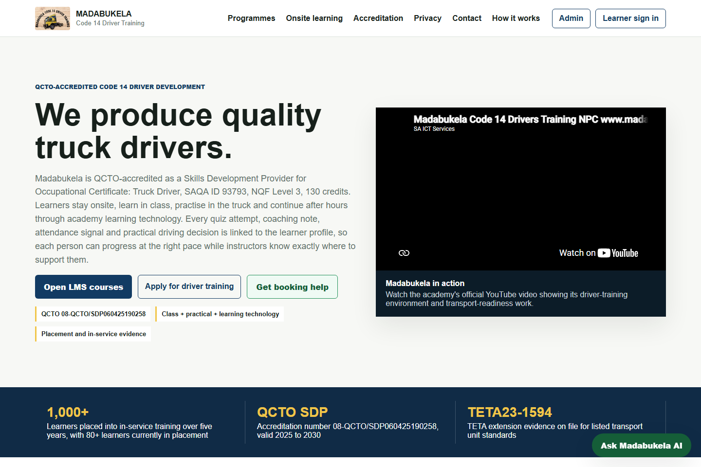

Selected work / 2025-2026
From requirements to delivery.
Institutional systems, software delivery, analytics and embedded engineering.
Institutional election project / 2025
Elangeni TVET SRC elections
Election technology and reporting work through SAICTS, covering USSD/web workflows, voter eligibility, administration, campus results and election analysis.
- Co-authored the August 2025 Elangeni SRC elections technical report.
- Worked on administrative controls, voter-roll handling and security-event visibility.
- Analyzed successful votes, failed attempts and campus-level participation.
Image: archived frontend preview with sample display data, not live election results. Student identities and source records are not public.
React / Python / AWS Lambda / Election Reporting
Institutional election operations / 2025
MUT SRC elections
Voter verification and election-system work for Mangosuthu University of Technology through SAICTS.
- Prepared voter-roll imports covering more than 12,000 records, with cleaning, duplicate handling and integrity checks.
- Worked on barcode-based verification, administrative controls, activity logging and operational reporting.
- Delivery records document AWS Lambda, API Gateway, Amplify and CloudWatch components.
Historical import and operational records support this description. No student data, election logs or institution credentials are published.
AWS / Data Ingestion / Voter Verification / Audit Logging
Implementation & operational analysis / 2025
USSD voting & gateway services
Low-bandwidth voting workflows for access from mobile phones without a smartphone application.
- Python/Flask request handlers, session/menu flow and administration.
- Eligibility and repeat-vote checks, session logs and security monitoring.
- Reconciled voters, sessions, retries, menu interactions and time-based billing to explain usage and cost differences.
Implemented work and documented analysis, not a claim of ISO certification or independently certified electoral security.
Python / Flask / Gateway Webhooks / SQL / Usage Analysis

Live learning platform
Madabukela Academy
An integrated learner journey covering onboarding, training, assessments, evidence portfolios and placement structures. Built for tablet access and unreliable connectivity.
- Offline queues, immediate assessment feedback and evidence synchronization.
- Node.js APIs, PostgreSQL and container deployment on Oracle Cloud.
- Context-aware tutor support with controlled language fallbacks.
JavaScript / Node.js / PostgreSQL / Docker / PWA
Visit public platform ↗Deployed beta / TestFlight
Papzi creator marketplace
A mobile-first marketplace connecting clients, photographers and models. Contracted engineering through SAICTS, spanning frontend flows, backend contracts and release delivery.
- Expo/React Native frontend and FastAPI/PostgreSQL backend.
- Role-based access, scheduled bookings, messaging and road-routing integration.
- Docker/GHCR delivery to Oracle; iOS TestFlight beta distribution.
300 concurrent CI read-test sessions; 3,000 requests without errors. This is test evidence, not a production-user claim. Financial and device acceptance remain ongoing.
TypeScript / React Native / Python / FastAPI / CI/CD
View repository ↗Analytics assignment
Commercial performance reporting
Power BI sales-analysis work covering executive summaries, regional performance, sales-manager comparisons, brand trends and customer analysis.
Built a native, multi-page report with interactive filtering and business recommendations. Private datasets are not published here; this work does not imply employment at AB InBev/SAB.
Power BI / Data Modeling / Reporting / Business Analysis
Embedded & drone telemetry prototypes
ESP32 + Raspberry Pi drone systems
Firmware and bench diagnostics spanning inertial/distance sensors, receiver input, servo/ESC outputs and companion-computer telemetry.
- MPU6050 sensor fusion, FlySky/iBUS and SBUS/PPM receiver diagnostics.
- ESP32-to-Pi JSON serial telemetry, CSV logging and a web monitoring interface.
- Heartbeat checks, receiver-loss failsafes and controlled arming gates.
Bench-tested development work; autonomous flight and flight certification are not claimed.
C++ / Python / ESP32 / Raspberry Pi / I2C / UART
Research & prototype
Phepha safety intelligence
A source-attributed community-safety prototype with map layers, public-data adapters, source status reporting and live event distribution.
Implemented API aggregation, TTL caching, deduplication and WebSocket updates. Availability depends on external data sources and credentials.
Express / WebSockets / MapLibre / Open Data